AFRL Condor PS3 Cluster
The AFRL Condor cluster is a large-scale PlayStation 3 computing system
funded by the US Air Force Research Laboratory (AFRL) under a CRADA agreement.
It represents a significant expansion of the PS3 Gravity Grid concept to
a production-scale scientific computing facility.
This cluster was deployed through the collaborative research agreement between Professor Khanna's group and AFRL, enabling sustained high-throughput gravitational wave computations at a scale not possible with the in-house PS3 cluster alone.
Photos
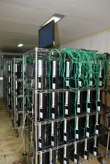
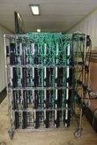
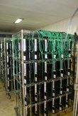
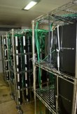
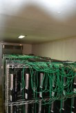
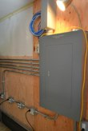
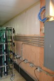
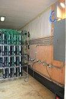
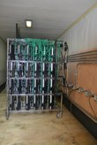
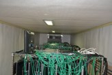
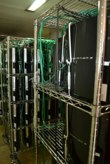
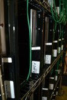
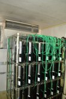
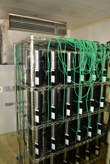